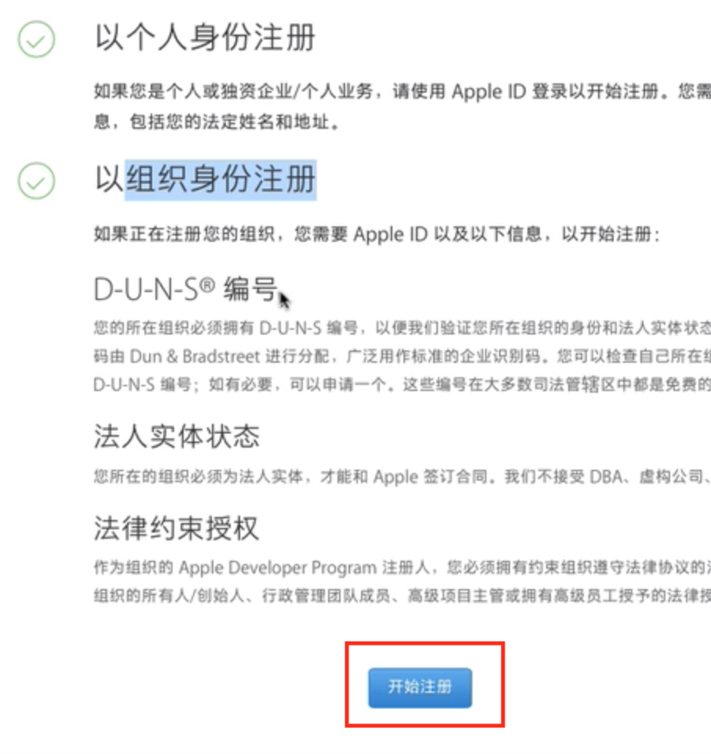
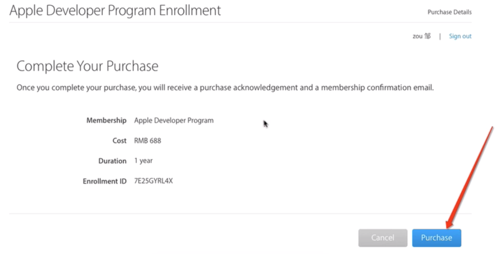
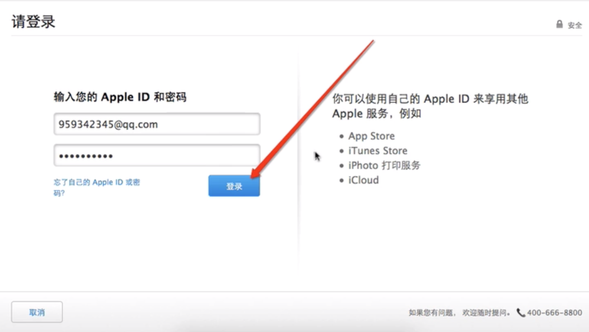
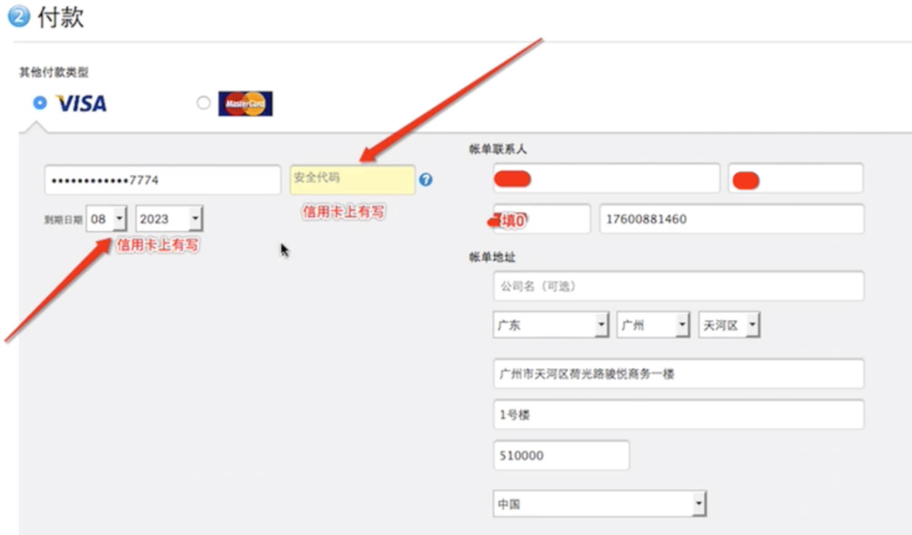
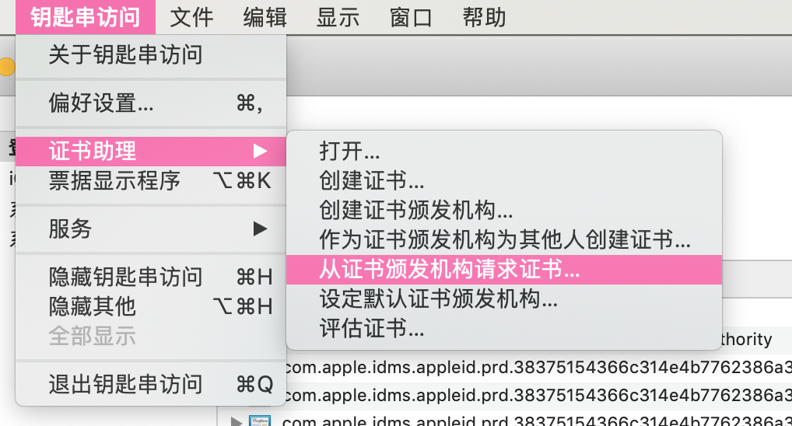
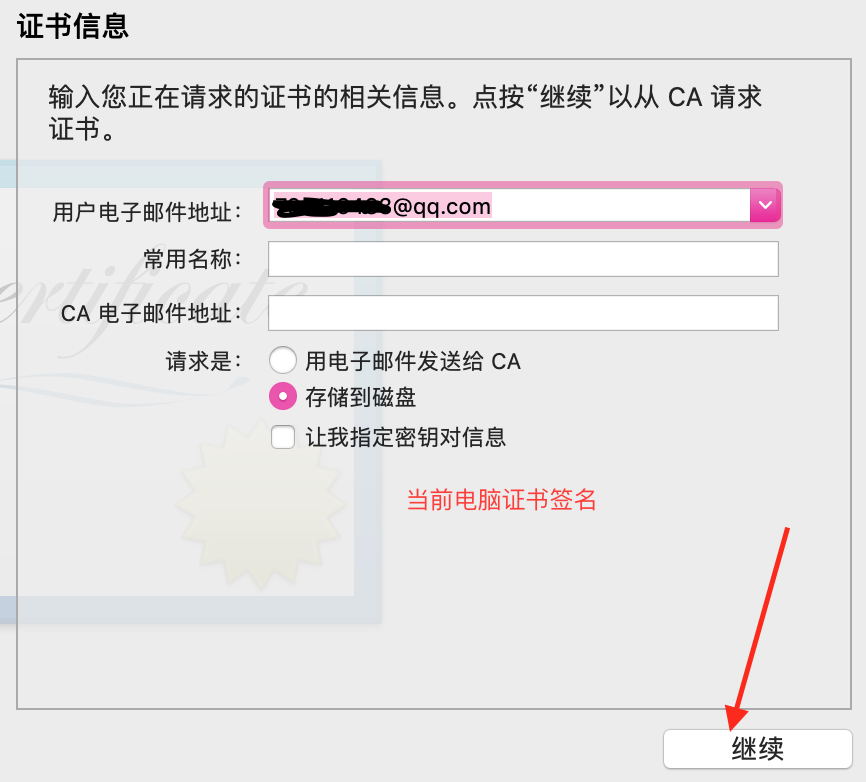
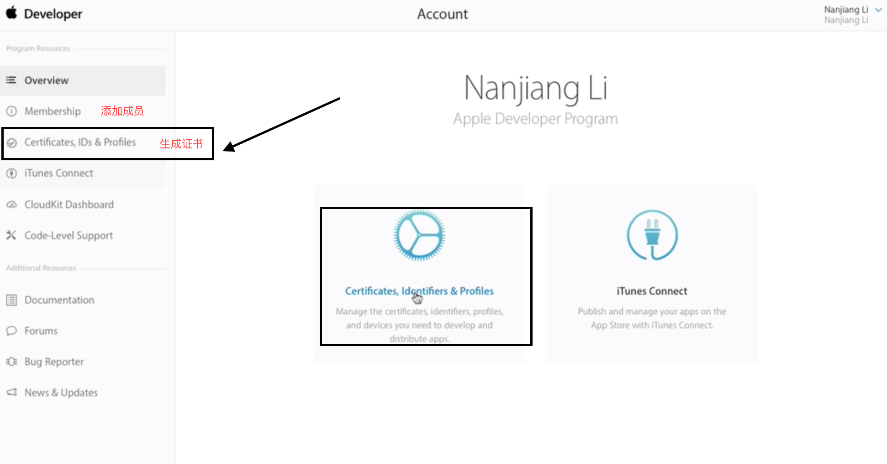
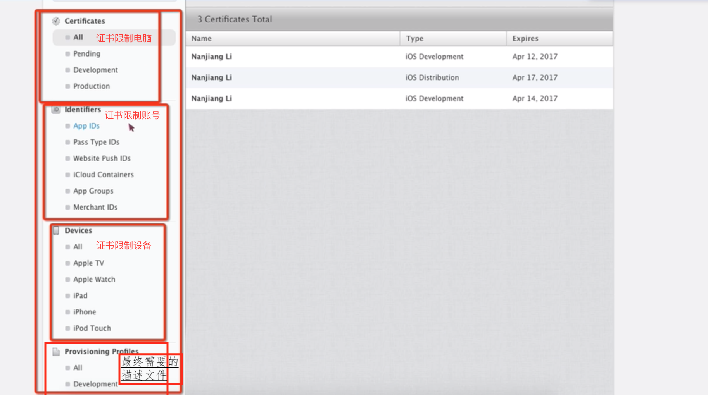
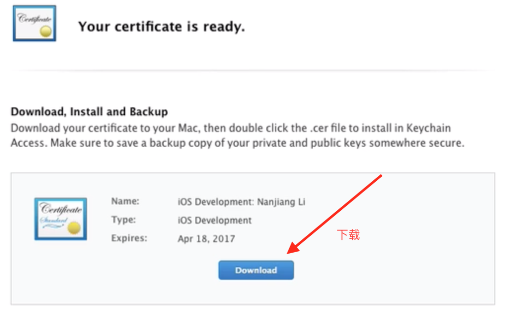

点击最后面的开始注册 
注册完成后，开始购买 
登录appleID 
付款->确认信息->继续付款->立即下单 
1) 生成证书签名
点左上角的 钥匙串访问 -> 证书助理 -> 从证书颁发机构请求证书 -> 填写相关信息,选择保存到本地 -> 得到一个 CertificateSigningRequest.certSigningRequest 证书签名 

2) 打开苹果开发者网址，并登录已经加入开发者计划的 App ID 账号,拿到 .cer证书 
点击第一个 all , 再点击右手边的 + 号 
上传证书签名
上传完成后，生成的.cer 下载到本地 保存起来 
描述文件分：开发阶段的描述文件 与 发布阶段的描述文件
1) 在生成描述文件前，先添加 App ID 和 App将运行到的设备
2) 点击最后一个描述文件证书的 all
.cer 运行成功后，就可以在 钥匙串访问 的 证书可以看到
描述文件 运行成功后，就可以在文件的 前往 -> 资源库 -> MobileDevice -> Provisioning Profiles 文件夹内看到 描述文件